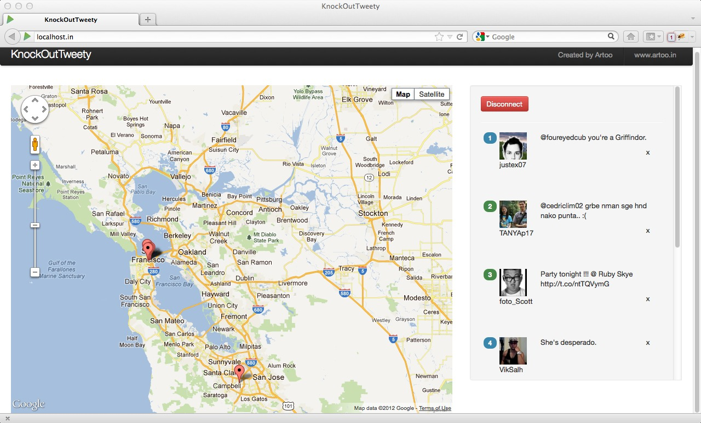

Demo showing Knockout.js with Twitter & Maps API using Play! Framework
Knockout.js is an extremely powerful and lightweight js framework that can be used along with jquery to make rich UI with few lines of code
KnockOutTweety is a quick example showing the powerful features of Knockout.js using Twitter Streaming API & Google Maps API v3. Here is a quick screen shot of what we are going to build
$ mv KnockOutTweety
$ cd KnockOutTweety
$ cd public/standalone
Documentation: Knockoutjs.com
It is designed to keep your UI and data (Model) in sync. It is a View-Model-ViewModel pattern unlike Backbone.js's Model View Controller architecture.
Knockout is a JavaScript library that helps you to create rich, responsive display and editor user interfaces with a clean underlying data model. Any time you have sections of UI that update dynamically (e.g., changing depending on the user’s actions or when an external data source changes), KO can help you implement it more simply and maintainably. Headline features:Lets jump to the documentation and take a look at a few examples: http://knockoutjs.com/documentation/introduction.html". Did you look at text, visible, foreach, observables -- is it impressive?Additional benefits:
- Elegant dependency tracking - automatically updates the right parts of your UI whenever your data model changes.
- Declarative bindings - a simple and obvious way to connect parts of your UI to your data model. You can construct a complex dynamic UIs easily using arbitrarily nested binding contexts.
- Trivially extensible - implement custom behaviors as new declarative bindings for easy reuse in just a few lines of code.
- Can be added on top of your existing web application without requiring major architectural changes
- Compact - around 13kb after gzipping
- Works on any mainstream browser (IE 6+, Firefox 2+, Chrome, Safari, others)
list of tweets and a status to run our UI. This is how we can define it
function Tweets() {
// data
var self = this;
// list of tweets; the UI constantly updates itself as the content of the list changes
self.list = ko.observableArray();
// status of our connection to the backend
self.status = ko.observable(false);
stream.twitter.com/1/statuses/sample.json?delimited=length
<div class="container-fluid">
<div class="row-fluid">
<!-- Box to place our map -->
<div id="map-container" class="span8" style="height: 600px;">
<div id="map-canvas" style="width: 500px; height: 400px;"></div>
</div>
<!-- An empty space -->
<div class="span1">
</div>
<!-- Box to display our list of tweets -->
<div class="span4" style="height: 600px">
<div class="well">
<!-- Display the login form only when connection status is false -->
<form id="login" class="form-inline" data-bind="visible: !status()">
<input type="text" name="username" class="input-small" placeholder="Username">
<input type="password" name="password" class="input-small" placeholder="Password">
<button class="btn btn-primary" onclick="firehose(event)">Connect</button>
</form>
<!-- Display the following block when the connection status is true -->
<div data-bind="visible: status()">
<button type="submit" class="btn btn-danger" data-bind="visible: status()" onclick="disconnect()">Disconnect</button>
<!-- Left for future enhancement
<hr />
<input type="text" name="tags" class="span3" placeholder="Tags">
-->
</div>
<hr />
<!-- Tweet list -->
<div id="messages" style="overflow-y: no; height: 100%;">
<!--
This is a single line to display a tweet; we are using foreach and templates.
We place a marker on the map once we are finished rendering the tweet
-->
<div data-bind="template: {name: 'tweet', foreach:list, afterRender: addMarker}">
</div>
</div>
</div>
</div>
</div>
</div>
Now, lets draw a single tweet:
Now lets complete the View Model
function Tweets() {
// data
var self = this;
// list of tweets; the UI constantly updates itself as the content of the list changes
self.list = ko.observableArray();
// status of our connection to the backend
self.status = ko.observable(false);
// behavior
// Add a marker on the map
self.addMarker = function(elements, data) {
// if the tweet doesn't contain any geo coordinates, skip the rest
if(data["geo"] == null || data["marker"])
return;
// extract latitude & longitude
var coords = data["geo"]["coordinates"];
var latLng = new google.maps.LatLng(coords[0],coords[1]);
// create a marker
var marker = new google.maps.Marker({
position: latLng,
map: map,
});
// store the marker as data
data["marker"] = marker;
}
// Removes a marker
self.removeMarker = function(data,event) {
// Is there a marker for this tweet
if(data["marker"] != null) {
var marker = data["marker"];
// removing the marker by unsetting its map property
marker.setMap(null);
// updating data
data["marker"] = null;
}
// removing the tweet from the list
tweets.list.remove(this);
}
// Pan to the tweet
self.panTo = function(data) {
// Contains a marker
if(data["marker"] != null){
// move to the location of the marker
map.panTo(data["marker"].getPosition());
}
}
// setup
}
// tweets is our viewmodel and knockout needs to constantly reflect its state
ko.applyBindings(tweets = new Tweets());
Twitter provides a streaming api which unfortunately cannot be directly consumed by plain javascript or ajax. However, you can use anything from node.js to Java Server. We are going to Play! Framework (www.playframework.org) and its excellent support for websockets. Here is a quick example:
// Post request. We ask Twitter to provide us a stream of tweets
// delimited by the length
HttpPost postreq = new HttpPost(
"https://stream.twitter.com/1/statuses/filter.json?delimited=length");
// Post parameters
List nameValuePairs = new ArrayList(
1);
// Bay Area region coordinates -- SW & NE for the bounding box
nameValuePairs.add(new BasicNameValuePair("locations",
"-122.75,36.8,-121.75,37.8"));
postreq.setEntity(new UrlEncodedFormEntity(nameValuePairs));
// Making a call to twitter
org.apache.http.HttpResponse stream = httpclient
.execute(postreq);
// Since this is streaming api, we continuously get a response
// from twitter and need to process it chuck by chuck
InputStream is = stream.getEntity().getContent();
...
// To process chunk by chunk, extract the length first by reading initial bytes
// And then read the tweet
while (readLine(is, b, 0, b.length) > 0) {
String count = new String(b).trim();
// In case twitter sends us a new line feed
// to keep the connection open
if("".equals(count)){
continue;
}
// Reading the next bytes to extract the tweet
byte[] buffer = new byte[Integer.parseInt(count)];
is.read(buffer);
// Store as string
String tweet = new String(buffer);
// If the socket is still open, send the tweet to the browser
if (inbound.isOpen()) {
outbound.send(tweet);
} else {
disconnect();
return;
}
// re-init b to avoid strange results
b = new byte[10];
}
Feel free to drop a note to @sameersegal